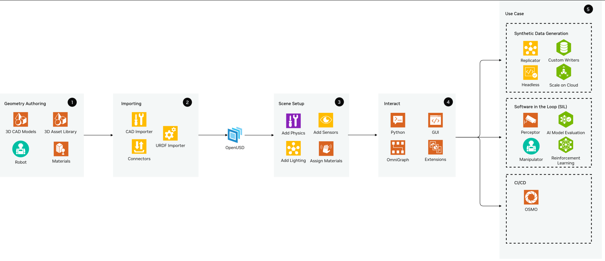
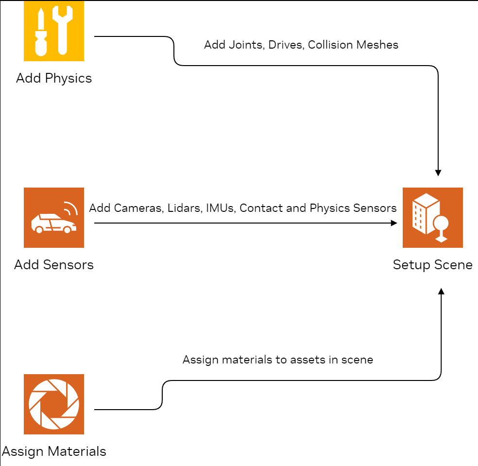
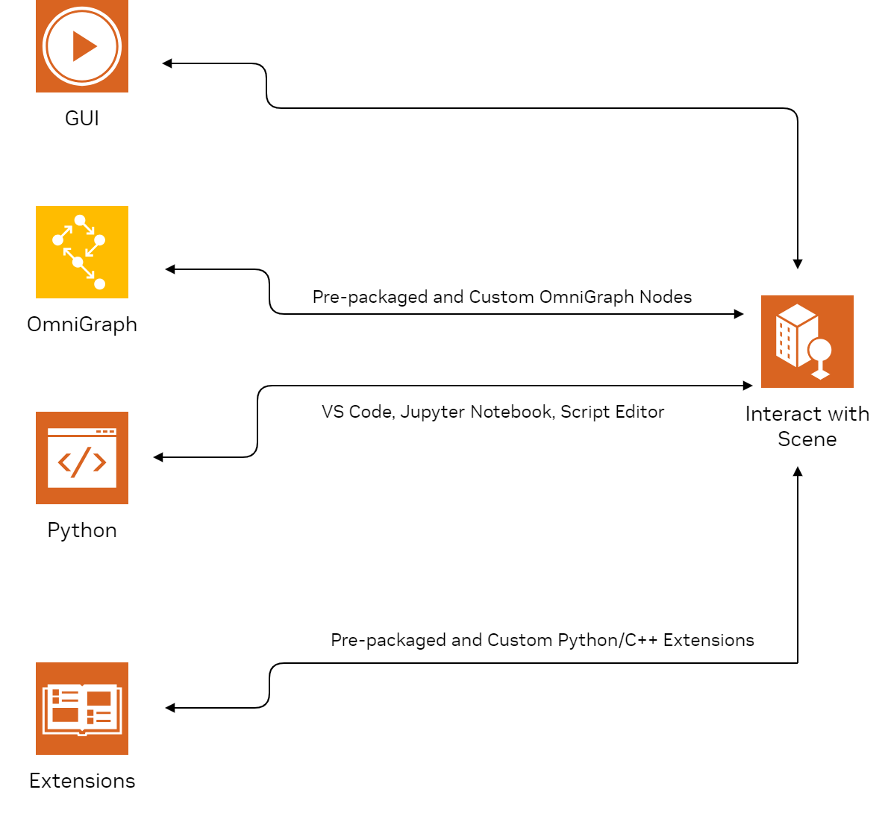
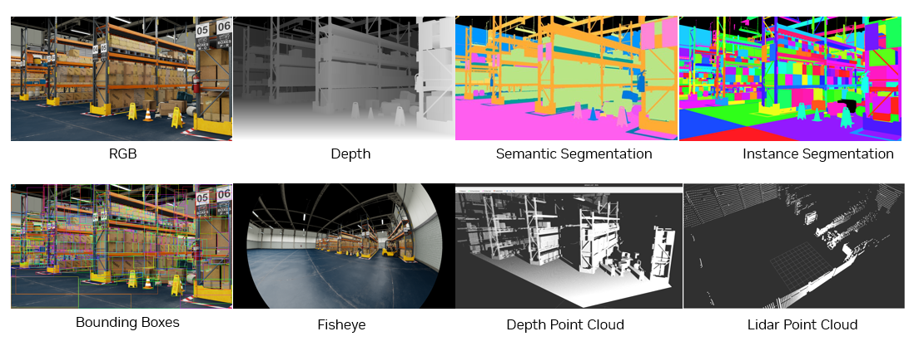

参考架构与任务分组#
Isaac Sim 通常作为更大解决方案的一部分进行安装和使用。根据您的用例和需求，本文档提供了一套参考架构。几乎所有用例都包含一些共同点，这些共同点在下面的图表中被突出显示为任务分组。在每个任务分组中，您的产品架构可以包含所列的一个或多个产品或组件。
无论您的产品组件如何，大多数 Isaac Sim 用例都涉及以下大致按相同顺序发生的高级任务分组：
1. Geometry Authoring
3. Scene Setup
4. Interaction with the Digital Twin
5. Use Cases
典型用例总结在 用例 中。




导入资产#
存在可将 CAD（计算机辅助设计）文件导入 Isaac Sim 的扩展，这些扩展负责处理向 OpenUSD 的转换。扩展是核心构建模块，可与 Isaac Sim 交互并添加或扩展其功能。
导入和创建环境#
可以利用 asset importer 导入 OBJ、FBX 和 glTF 格式。 CAD converter 扩展支持来自 Catia、Solidworks、AutoCad 和 Creo 等应用程序的多种流行 CAD 文件。这使您能够快速转换并将环境导入 Isaac Sim。
OpenUSD Connections and Data Exchange（前身为 Omniverse Connect）是一组 importers、 exporters、 converters 和 USD file format 插件。它们使各种 3D 应用程序、产品和文件格式能够使用 OpenUSD 交换数据。
某些 CAD 应用程序具有与 Omniverse 的连接连接器，这使它们在转换为 USD 时能够带入更多相关且具上下文的信息。例如，PTC Creo、Autodesk Revit 或 Autodesk Alias 都有相应的连接器。由它们的 CAD 转换器生成的文件将在 OpenUSD 中表示所有视觉网格。


导入机器人#
Isaac Sim 已附带多种预先导入的机器人。预导入的机器人可在 Robot Assets 页面找到。Isaac Sim 还提供了导入其他机器人的高级选项。
如果您的机器人采用 URDF 格式，您可以从 GUI 或 Python 使用 URDF Importer Extension 扩展。此扩展将导入视觉网格和 prim 层级结构（父子关系），以及有关碰撞网格、关节和传感器如何编码的额外信息。
您还可以使用 Onshape Importer 和 MJCF Importer Extension。使用这些导入器时，您需要添加关节驱动，并且可能需要对其进行调优。Gain Tuner Extension 允许您可视化并调优关节。
场景设置#
在所有必要资产转换为 OpenUSD 并导入 Isaac Sim 后，您可以设置场景。
为了正确模拟真实世界情况，必须定义物理特性。例如，物理特性定义物体是否受重力影响或其坚固程度。


添加物理属性#
在将所需资产导入 Isaac Sim 后，请确保它们具有适当的物理属性，以实现精确的仿真。某些资产导入器（如 URDF 和 Onshape Importer）会继承大部分物理参数和配置，但对于其余导入的资产，在继续操作之前必须添加物理属性。NVIDIA Omniverse™ 物理仿真扩展由 NVIDIA PhysX SDK 提供支持。它支持刚体仿真、角色控制、可变形体仿真、粒子仿真和关节结构。为场景添加物理属性的关键步骤包括：
创建物理场景
分配碰撞设置
添加关节和驱动器。
创建物理场景#
第一步是创建物理场景，并确保其默认参数可以接受。例如，验证场景中重力的方向和大小。如果导入的场景不包含地面平面，请务必在继续操作之前添加一个，以防止任何启用物理属性的对象穿过地面掉落。除非您正在仿真数百个刚体和机器人，否则使用 CPU 求解器比使用 GPU 求解器更高效。 请参阅 教程 1：舞台设置 教程
分配碰撞设置#
Collision 使刚体能够在环境中相互交互。对象的几何形状可以通过凸包、凸分解、包围球、包围盒和 SDF 碰撞网格进行近似。每种方法使用不同的近似技术，可能更适合特定的用例。PhysX 支持 Cube、Capsule 和 Sphere 形状的精确表示。Cone 和 Cylinder 通过自定义几何标志支持，在设置机器人车轮的碰撞近似时特别有用。刚体物理材质 提供摩擦、恢复系数（即“弹性”）和材质密度属性
添加关节和驱动器#
在将适当的碰撞网格添加到场景中的 prim 后，我们需要确保它们能够正确地相互交互。我们可以通过在相互连接的 prim 之间定义适当的关节来实现这一点。关节使你能够通过定义对象之间的相对运动方式来连接物理对象。有多种关节类型 可供选择，包括 revolute、prismatic、spherical、fixed 等。
添加传感器#
Isaac Sim 传感器仿真扩展可以模拟真实感知和基于物理的传感器，并包含一个逼真的传感器模型库。你可以模拟相机、激光雷达、雷达以及基于物理的传感器。可以通过将 OpenCV 或 ROS 获取的相机标定参数转换为 Isaac Sim 单位来使用这些参数，请参阅 Camera Sensors 页面。RTX Lidar 和 Radar 传感器在渲染时通过 RTX 硬件在 GPU 上进行模拟。此外，还包含多种基于物理的传感器，如接触传感器、IMU 传感器、力传感器、力矩传感器和接近传感器。这些传感器可以添加到 stage 层级结构中的适当位置（例如，相机或激光雷达可以添加到机器人的前部/顶部附近）。Camera Sensors 和 RTX Lidar Sensors 页面重点介绍了 Isaac Sim 中所有可用的物理传感器资产。
导入和创建材质#
在 Isaac Sim 中，材质通过 NVIDIA 材质定义语言 (MDL) 提供支持，这是一种专为在计算机图形中定义和描述材质外观而设计的着色语言。它允许艺术家和开发人员通过指定材质的物理属性、表面特征以及与光的交互方式，创建高度逼真的材质。Omniverse 提供了多种模板材质，包括基于物理的玻璃材质；适用于电介质和非电介质材料、皮肤、头发、液体以及其他需要次表面散射或透射效果材料的多种通用多叶瓣材质；以及 USD 的 UsdPreviewSurface。
与数字孪生的交互#
导入资产并设置好场景后，有多种方式可以与模拟环境进行交互，总结如下。


GUI#
GUI 提供了用于场景管理、对象操作和实时监听的直观控件，为开发和测试机器人系统提供了简化的界面。通过 GUI，可以轻松访问预打包的示例、机器人和环境，并将其添加到场景中。创建工具使得组装、照明、模拟和渲染大小场景变得轻而易举，因此这里是构建虚拟世界、组装机器人和检查物理效果的理想场所。有关开始使用 GUI 教程的信息，请参阅 GUI。
独立 Python#
Isaac Sim 提供了一个内置的 Python 环境，供包使用，类似于系统级 Python 安装。这是在 Isaac Sim 中运行 Python 脚本的推荐环境。所有 Isaac Sim 库和依赖项都可以通过此 Python 环境进行导入和访问。它还允许用户以无头模式（headless）编写脚本并运行整个工作流。对于使用不属于 Isaac Sim 的库和工具，请首先确保它们兼容 Python 3.11。Isaac Sim 提供了一系列独立 Python 示例，作为了解整体步骤的良好起点。同时也支持 Jupyter notebook 和 Visual Studio Code。GUI 中的工作流可以完全通过 Python 进行脚本化，并且也可以在无头模式下运行。
扩展程序#
扩展程序使开发人员能够为 Isaac Sim 添加功能并集成其他工具。 它们是独立构建的应用程序模块。Isaac Sim 中使用的所有工具均作为扩展程序构建。 各种扩展程序使与场景中的传感器、机器人和图元（prims）的交互更加便捷。 ROS 2 Bridge 扩展程序可用于将您的 ROS 包和代码连接到 Isaac Sim。 开发人员可以使用 C++、Python 或两者结合的方式编写自己的扩展程序。
OmniGraph#
OmniGraph 是 Omniverse 的可视化脚本语言。 它并非单一类型的图，而是在单一框架下由多种不同图系统组合而成。 许多 Isaac Sim 扩展程序提供了用于构建常见用例图的节点。 Core、传感器和 ROS 扩展程序就是包含此类 OmniGraph 节点的几个示例。
用例#
合成数据生成 (SDG)#
开发人员可以使用 Omniverse Replicator 生成物理准确的合成数据，这些数据可用于增强用于机器人技术的 AI 感知网络的训练和性能。 Replicator 是一组扩展程序、Python API、工作流和工具的集合，支持合成数据生成任务。
场景设置完成后，Replicator 可用于修改和随机化场景中资产的各种属性，如位置、旋转、光照、尺寸和纹理。它支持广泛的标注类型，包括 2D 边界框、3D 边界框、语义和实例分割掩码、法线、深度、点云等，并以 COCO 和 KITTI 等常见格式输出数据。此外，还可以实现自定义标注器和写入器，以满足姿态估计等高级用例的需求。这使得开发人员能够将生成的数据无缝集成到其训练流水线中


要开始使用，开发人员可以利用 Omniverse Replicator 提供的 Python API 来生成合成数据。相同的脚本可以通过 Isaac Sim Docker 容器（说明参见 Container Installation）在开发人员首选的云服务商（AWS、Alibaba、Azure、GCP）上以无头模式在云端生成数据，具体操作可参考 Cloud Deployment 指南。对于低代码场景，可以使用 Replicator YAML，以便非技术专家也能轻松编辑脚本。它们提供了高度的可移植性和可靠性，非常适合云端用例。
软件在环 (SIL)#
仿真场景搭建完成后，开发人员可以对其机器人软件栈的各个方面进行调优和测试。通过调整软件栈和仿真机器人的参数与配置所获得的洞察，有助于更轻松、准确地过渡到物理真实世界机器人。以下是一些常见用例：
AI 模型评估#
在仿真中评估模型非常简单，因为可以直接访问真实值（Ground Truth），这些真实值可以通过物理引擎、机器人状态或传感器读数获得。然后可以将这些真实值与模型预测结果进行比较，以获取评估指标。
例如，在计算机视觉任务中，可以将仿真相机渲染的图像输入模型以获取预测结果。然后可以将这些预测结果与真实值（可直接从仿真中获取或通过 Replicator 获取）进行比较，以获取评估指标。这也适用于其他传感器（如激光雷达），并且可以轻松扩展到多模态应用。
感知#
Isaac Perceptor 是一个参考工作流，包含 NVIDIA 加速库和 AI 模型，可帮助您快速构建稳健的自主移动机器人 (AMR)，使其能够在仓库或工厂等非结构化环境中进行感知、定位和操作。它支持来自 Isaac Sim 中模拟环境的输入
操作#
Isaac Manipulator 可用于操作任务并在仿真中进行验证。它是一组用于感知驱动操作的 GPU 加速软件包，提供物体检测和姿态估计等功能。可以使用 cuMotion 生成时间最优的无碰撞运动。Nvblox 可用于局部 3D 重建和障碍物检测。Isaac Sim 中的 ROS Bridge 也支持 MoveIt。
强化学习#
部署策略 是一个统一且模块化的机器人学习框架，旨在简化机器人研究中的常见工作流（如强化学习、从演示中学习以及运动规划）。它基于 NVIDIA Isaac Sim 构建。
硬件在环 (HIL)#
使用 Isaac Sim 可以进行硬件在环 (HIL) 测试和评估。目标部署设备将接收来自仿真机器人和传感器的所有数据，这些数据可以输入到所需的软件栈/算法中。可以利用 ROS 2 作为中间件，处理从仿真计算机到目标设备的所有数据发送和接收。例如，Isaac Sim 中的仿真相机将通过 ROS 2 桥接，将所有图像数据流式传输到 NVIDIA Jetson Orin，即运行计算机视觉应用的机器人嵌入式设备。这在选择目标部署设备时特别有用，可以在物理搭建机器人之前验证其能否运行所需的软件栈。
CI/CD#
OSMO#
OSMO 是一个云原生工作流编排平台，可让您轻松地在分布式环境（从本地部署到私有云和公有云）中扩展工作负载。您现在可以申请早期访问权限。
尺寸计算器#
请参阅 Isaac Sim 基准测试 页面，获取 Isaac Sim 在多种消费级和企业级硬件配置下的性能基准数据。
延伸阅读#
请查阅相关教程，深入了解对应章节。